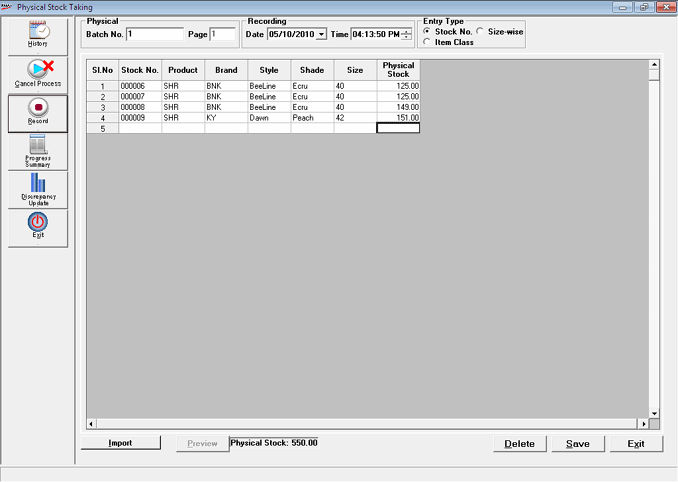
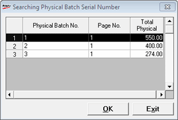
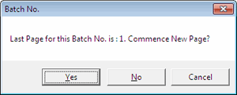
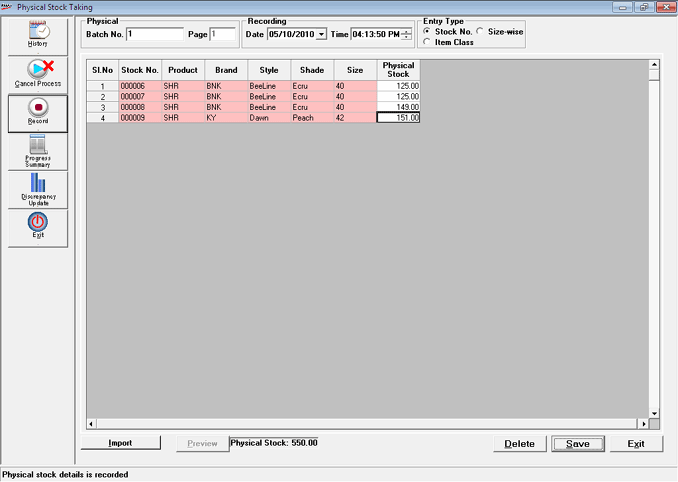
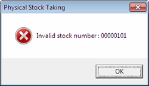

Manual recording of Physical Stock can be done through any of the following manners:
Direct Keyboard Data Entry of Physical Stocks from manual Stock Sheets.
Using Bar-Code Scanner connected to the computer where Shoper 9 is installed.

Physical
Batch No.: Enter the batch number or press F2 to open the window as displayed.

Select the required batch number from list.
If the Batch No. is already entered then the following message is displayed.

Click Yes to continue with the same batch reference number but next page number.
Click No to continue with the same batch reference number and same page number. The details of the next items get entered into the same batch reference number.
Click Cancel to go back to the batch reference field to enter a different batch reference number.
Note: Entering of the Item details in their respective batch reference can be done through entering of the Stock Number in the Stock no. column or by scanning of the Barcode in the stock number column or by entering the item details in their respective columns.
Page: Displays the page number, by default
Recording Date/time: Enter the current date and time
Entry Type
Stock No.: Enter/scan the Stock Number
Item Class: Enter Items, Classification wise
Size Wise: Enter size-wise details
Note: Changing of Entry Type can be done at any time during stock recording.
Physical Stock: Displays the total quantity of Physical stock entered, after entering the Item details into the grid
The grid is populated by any one of the methods mentioned.

Invalid SKU alert message is an application control to ensure that stocks with only valid stock numbers are entered in Shoper 9 during the stock taking. When the SKU code provided is invalid, instead of only displaying the message on status bar, which might be overlooked, a pop-up message box appears as shown. This ensures that the user reads it and takes appropriate action to record the correct stock number.

Click OK and continue recording the physical stock.